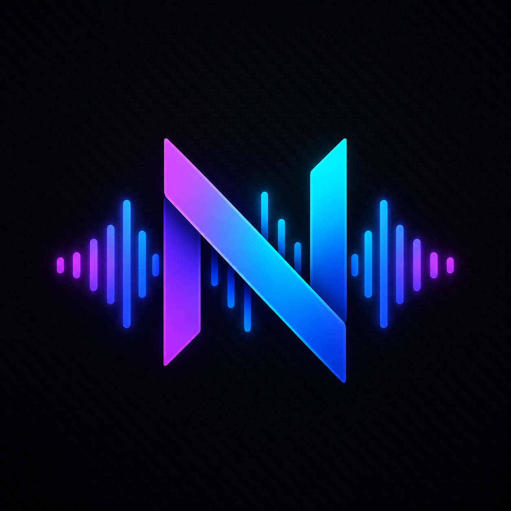

Windows · Linux · macOS · FreeNexusAudio is an all-in-one music toolkit. Pull any Spotify track, album, or playlist from YouTube, clean up your library with a spreadsheet-style tag editor, and grab rare tracks straight from the Soulseek P2P network — all in one app.
A downloader, a tag editor, and a P2P file finder — no external programs required. Everything runs in a single application.
Paste any Spotify track, album, or playlist URL and NexusAudio grabs the audio via YouTube. Works without an API key — a web-scrape fallback is built in.
A spreadsheet-style editor for MP3, FLAC, M4A, and OGG with bulk rename, find & replace, extended tags, and per-file cover art preview.
Search releases by artist or album, auto-match track titles and numbers to your files, and download & embed cover art in all four formats.
Fetch and embed lyrics from lyrics.ovh with a Genius fallback — saved straight into the ID3, Vorbis, or MP4 tags.
Full SLSK wire protocol: connect to the Soulseek network, search peers, and download files directly — with reconnection and queue handling.
From Nexus Dark to Dracula, Nord, Catppuccin, and Tokyo Night. Switch your look instantly from the settings tab.
Your format, your quality, your folder — queued, tagged, and lyrics-embedded.
Batch edits that would take hours in other tools — done in minutes.
Soulseek is where niche and hard-to-find music lives. NexusAudio speaks the protocol natively.
| Platforms | Windows · Linux · macOS · Docker |
| UI | PyQt6 desktop application |
| Language | Python 3.10+ |
| Formats | MP3 (64–320 kbps) · FLAC · M4A · OGG |
| Downloading | yt-dlp (YouTube audio) · spotipy or built-in web scraper |
| Metadata | MusicBrainz · Cover Art Archive · lyrics.ovh · Genius |
| P2P | Soulseek SLSK wire protocol over TCP |
| Dependencies | FFmpeg required for audio conversion |
| Pricing | Free |
NexusAudio is free for Windows, Linux, and macOS. Downloads are on the way — check back soon.